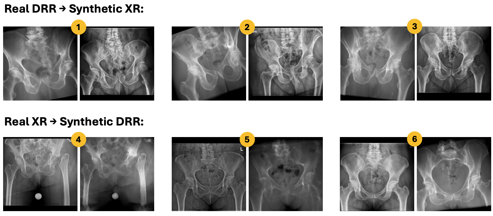

1. CycleGAN is Insufficient for DRR to XR Style Transfer
Training a deep learning model to rotate 2D radiographs in 3D space encounters a significant limitation: the absence of actual radiograph pairs
with known transformations between them to serve as ground truth data for training. To address this, we adopted the approach of several prior studies that attempted building
3D volumes from 2D radiographs: synthesizing "virtual" radiographs from computed tomography (CT) data. These virtual radiographs, known as Digitally Reconstructed Radiographs (DRRs),
offer a major advantage: being programmatically created, they allow us to precisely control the differences between two DRRs in 3D space.
Furthermore, we can theoretically generate an infinite number of radiographs from a single CT volume. This method should, in theory,
provide ample training data for a model designed to rotate radiographs. However, there exists a subtle yet crucial issue: the style (contrast and brightness)
of DRRs differs significantly from that of standard radiographs. Consequently, a model trained on DRRs is unlikely to generalize effectively to conventional radiographs.
The studies in question addressed this issue by employing CycleGAN (or its variants), an unpaired image-to-image style transfer deep learning model
designed to adapt the style of radiographs to DRRs without altering their content. Following this lead, we too attempted this strategy, training
a CycleGAN on over 200,000 pairs of DRRs and radiographs from our dataset. However, we encountered a critical realization: given the absence of
rotated radiographs in our training dataset, CycleGAN was unable to learn the process of applying the style of radiographs to rotated DRRs.
Consequently, it simultaneously altered the style of rotated DRRs and transformed their content to resemble that of non-rotated radiographs.
This represented a significant limitation in our research.

2. All You Need for Style Transfer is RandHistogramShift!
As a result of the Cycle-GAN performance, we replaced it with the inclusion of the RandHistogramShift transformation in our
data preprocessing pipeline during the training phase. The logic behind the RandHistogramShift transfer is straightforward
and effective. We hypothesized that the primary distinction between a DRR and a radiograph lies in their pixel intensity distributions,
affecting their overall brightness and contrast. Therefore, by making the DDPM agnostic to the pixel intensity distribution of
the input images, it should, in theory, become capable of generalizing to any type of radiography data (e.g., X-rays, DRRs, or
fluoroscopy shots), despite being solely trained on DRRs. Our approach implementation is shown in Figure 5. During training,
we generated a random image filled with stochastic noise and then applied image processing techniques to align the histogram
of each pair of input and output DRRs with that of the noisy image. Given that the noisy image is randomly generated at each training step,
the DDPM is pushed to disregard the stochastic pixel intensity distributions of the ground truth DRR pairs, focusing instead on their
content to learn the 3D rotations.
3. Consistent View Transformation Capabalities
In our methodology, we trained a conditional Denoising Diffusion Probabilistic Model (DDPM) that accepts an input radiograph
along with a set of transformations (along the x, y, and z axes) and outputs a radiograph rotated according to those specified transformations.
The transformation values used during training were chosen from a predefined set: [-15°, +15°].
As anticipated, our model successfully learned to apply transformations corresponding to one of these values in each axis to the input radiograph:
However, we also discovered that our model can apply consistent transformations to the input radiograph across the entire spectrum of [-15°, +15°] along any of the three axes.
The key for doing so lies in feeding a constant noisy image to the model during inference for all predictions along the desired spectrum.
We leveraged this capability, combined with interpolation techniques in the embedding space, to generate a comprehensive range
of rotations for various input radiographs. This approach effectively simulates the consistent rotation of an anatomical
volume in 3D space, illustrating the model's versatility in creating detailed and varied transformations.
You can try this by playing with the slider below:
Please look at our paper and demo for more information.